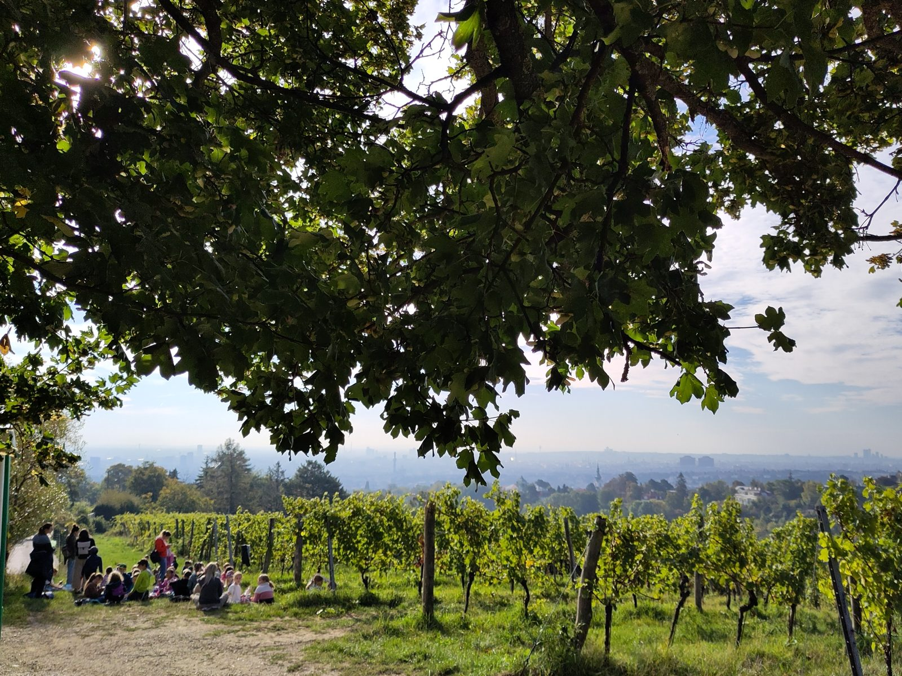

Garten
Im Garten stehen die Bankerl auch für die seltenen Sonnenstunden bereit – Platz für bis zu 300 Besucher.
Unser reichhaltiges traditionelles Selbstbedienungsbuffet bietet eine Vielzahl an Wiener Köstlichkeiten, Spezialitäten aus den Regionen Österreichs sowie warme und kalte Schmankerl aller Art.
Alle Speisen und Salate für unser Buffet werden in unserer Küche täglich frisch gekocht.
In den Monaten April bis Dezember bis 22:00 Uhr und von Jänner bis März bis 21:00 Uhr bieten wir regionale Spezialitäten und Schmankerl aller Art, warm und kalt.
Ab 25 Personen empfehlen wir Ihnen unterschiedliche Buffetangebote. Selbstverständlich stellen wir das Buffet auch ganz nach Ihren persönlichen Wünschen für Sie zusammen – sprechen Sie uns einfach an.
Buffetvorschläge auf Anfrage. Zusammenstellung und Preise für Gruppenbuffets erhalten Sie vom Büro (Mo–Fr 10–14 Uhr) – wir schicken Ihnen ein Angebot für Ihre Personenzahl.
Die Ruhetage Sonntag und Montag halten wir auch im Sommer. Ab einer Personenanzahl von 50+ mit Buffet und rechtzeitiger Voranmeldung öffnen wir an Sonn- und Montagen natürlich und gerne ganz regulär für Sie.
Ob Betriebsfeier in großem Rahmen oder Tauffeier im familiären Kreis: Wir bieten für alle Anlässe und fast jede Veranstaltungsgröße die passenden Räumlichkeiten. Unsere vier stimmungsvollen Gasträume bieten Platz für 280 Personen, der Garten für bis zu 300 Besucher.
Im Garten stehen die Bankerl auch für die seltenen Sonnenstunden bereit – Platz für bis zu 300 Besucher.
Das Gewölbe beherbergt heute auch unsere Galerie Kunstrausch: ein ganz anderes Bild als im übrigen Haus, ein künstlerischer Kontrapunkt.
Der Platz für die Runde, die sich regelmäßig trifft – mittendrin im Haus.
Benannt nach der alten Weinpresse – unser Raum für Runden im kleineren Kreis.
Hier spielt die Wiener Liedkunst. Die rund 70 Stühle im Alten Saal stammen aus 1923 und haben 2023 ihren 100. Geburtstag gefeiert – sie funktionieren noch genauso wie zur Bauzeit. Der Raum hat einen schönen Klang.
Das Stüberl für die kleine, familiäre Feier.
Der gewölbte Gang zum Garten – heute die längste Bilderwand des Hauses.
Im Herbst bei Schönwetter ab 13 Uhr geöffnet – jeden Sonntag im September und Oktober.
Eine einfache Jause im Weinberg, ein schönes Glas Wein dazu und der Blick über die Stadt: Dafür lohnt sich der Weg hinauf. Am 6. Oktober spielen um 16 Uhr die Texas Schrammeln im Weingarten. Wer die Location für einen eigenen Termin exklusiv buchen möchte: einfach anfragen.
So kommen Sie hin: mit dem Autobus 38A auf den Parkplatz am Cobenzl fahren, dann den Reisenbergerweg 10 Minuten zu Fuß hinunter gehen bis zum Tor „Weingut Hengl“.

Gewölbe, Weingarten und Weintor – zum Vergrößern anklicken.


{kind=link}
{kind=link}
{kind=link}
{kind=link}
{kind=link}